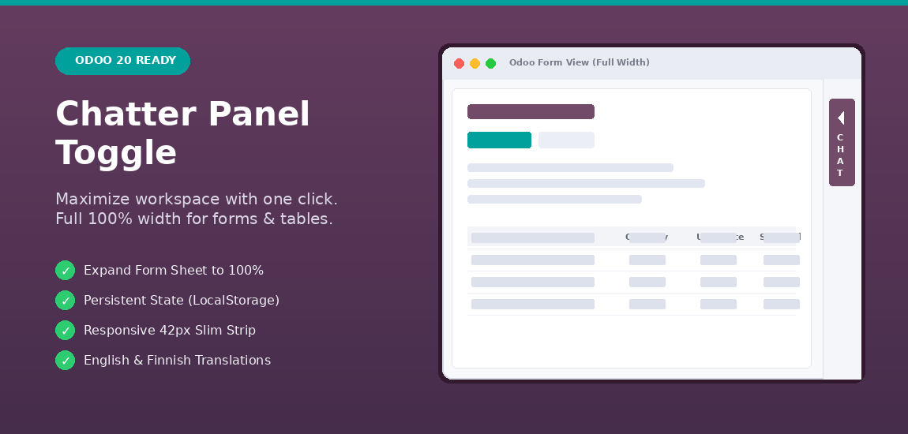

Instant one-click toggle to show or hide the chatter sidebar and expand form views to 100% width.

In standard Odoo form views, the chatter sidebar permanently occupies 30% to 40% of the screen. For complex records like Sales Orders, Purchase Orders, and Stock Operations, table columns become cramped and horizontal scrolling is often required.
Chatter Panel Toggle adds a sleek toggle button directly at the top of the chatter. With a single click, collapse the chatter into a slim 42px vertical strip and expand the form sheet to 100% width, giving maximum space to your business data.
Engineered cleanly for high productivity and zero performance overhead.
When collapsed, the form sheet expands smoothly to 100% width, allowing you to see all table columns, order lines, and long product names without truncation.
Your preference is remembered in the browser's localStorage. Switch views or navigate through records without having to re-collapse every time.
In collapsed mode, the chatter transforms into a clean 42px right-hand strip with an ergonomic vertical toggle button for instant re-expansion.
Developed by Kauko Sirén. Built for Odoo 20 under the LGPL-3.0 license.
View Source on GitHub